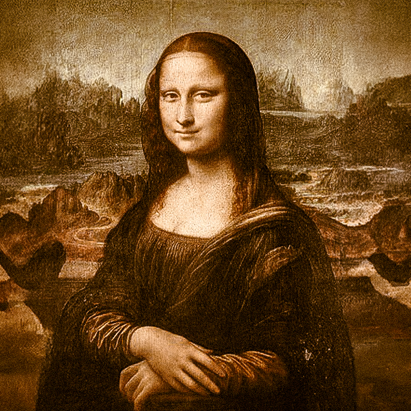
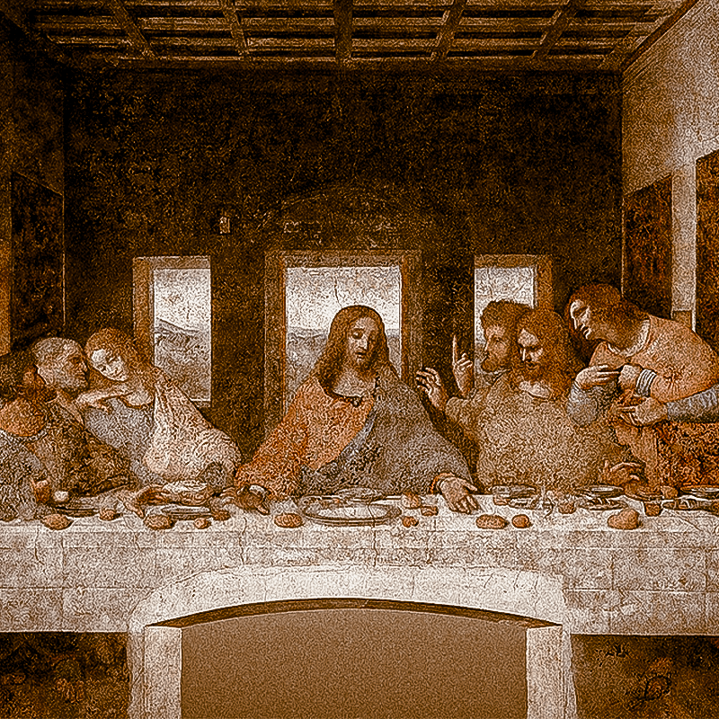
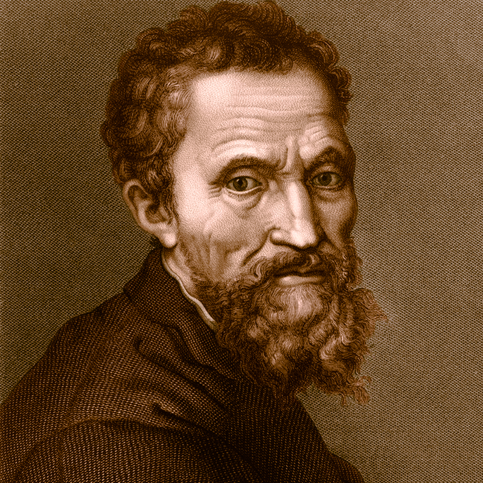
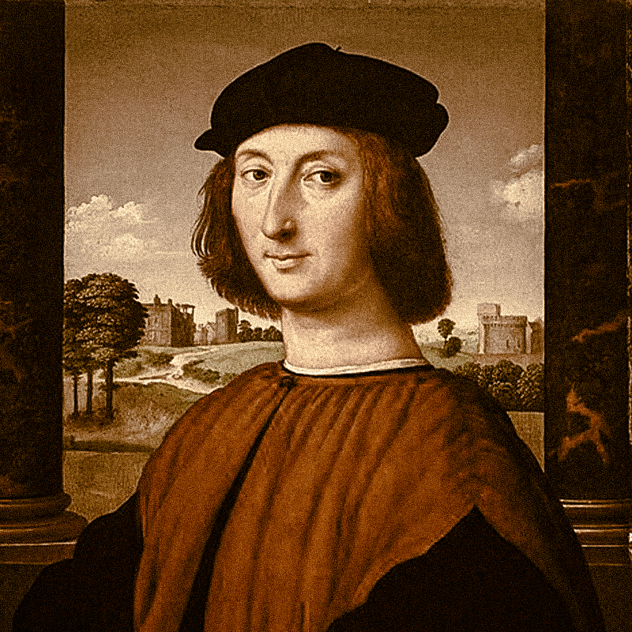

WHY THIS ERA IS THE GREATEST ?
No single era has shaped the visual language of painting more profoundly. The Italian Renaissance gave the world perspective, anatomy, chiaroscuro, and the idea of the artist as genius — not craftsman. In roughly 200 years, Florence, Venice, and Rome produced a concentration of masterworks unmatched in any century before or since. Every subsequent era in Western painting defined itself either by following or rebelling against what the Renaissance established.
Historical context
Fueled by Medici patronage, the rediscovery of classical antiquity, and a humanist philosophy that placed man at the center of the universe, the Renaissance gave artists unprecedented intellectual status. The Church, wealthy merchants, and rival city-states competed to commission the finest works — creating the most fertile patronage environment in history.
.png "Leonardo Da vinci")
Leonardo da Vinci
Leonardo da Vinci was the quintessential "Renaissance Man," a polymath whose influence spanned across art, science, engineering, and anatomy. Renowned for masterpieces like the Mona Lisa and The Last Supper, his brilliance lay in his ability to blend meticulous scientific observation with unparalleled artistic technique. Beyond the canvas, his notebooks revealed a visionary mind centuries ahead of its time, containing detailed sketches of flying machines, hydraulic systems, and groundbreaking anatomical studies. Da Vinci’s legacy remains a testament to the power of curiosity and the seamless integration of creative intuition with logical inquiry. His relentless pursuit of knowledge drove him to dissect human bodies in secret, producing anatomical drawings of astonishing accuracy that would not be fully appreciated until centuries later. Equally remarkable was his habit of recording ideas in mirror writing, a technique that both protected his work and reflected the deeply personal, almost coded nature of his intellectual explorations. Even in unfinished projects, his work demonstrated a rare fusion of imagination and discipline, illustrating how his mind constantly moved between observing the natural world and reinventing it through innovation.
The Mona Lisa
The creation of The Mona Lisa began around 1503 in Florence, believed to be a commissioned portrait of Lisa Gherardini, the wife of a silk merchant. However, Leonardo da Vinci never actually delivered the painting to its patron. Instead, he kept it with him for over a decade, treating it as a lifelong pursuit of perfection. He carried the wood panel across Italy and eventually to France, continuously refining the subtle layers of oil glazes to achieve the lifelike skin tones and the "unfathomable" smile that defines the work.
The story behind the masterpiece is one of obsessive technical evolution. Leonardo utilized his deep understanding of optics and human anatomy to ensure that the portrait appeared to change depending on the viewer’s perspective. By the time of his death in 1519, the painting had transitioned from a standard private commission into a profound scientific and psychological study. Its journey from Leonardo’s personal studio to the French royal collection—and eventually its rise to global fame after a daring theft from the Louvre in 1911—has cemented its status as a symbol of the intersection between art and mystery.


The Last Supper
creation of The Last Supper
was a monumental undertaking commissioned by Ludovico Sforza for the refectory of the Convent of Santa Maria delle Grazie in Milan. Painted between 1495 and 1498, the work represents a radical departure from traditional fresco techniques. Rather than using the standard "buon fresco" method of painting on wet plaster—which required fast, decisive brushwork—Leonardo experimented with an experimental tempera and oil medium on dry masonry. This allowed him to work slowly and apply the same meticulous detail and sfumato effects found in his studio portraits, capturing the precise moment of psychological shock following Christ's announcement of a betrayal.
The story of the painting is one of both mathematical genius and tragic physical decay. Leonardo utilized linear perspective with such precision that the room’s architecture appears to be an extension of the actual refectory, with the vanishing point centered perfectly on Christ’s head to emphasize his divine importance. However, his experimental technique proved unstable almost immediately; the paint began to flake and deteriorate within years of completion. Despite centuries of environmental damage, botched restorations, and even surviving a direct bombing during World War II, the mural remains a definitive masterpiece of the High Renaissance, capturing human emotion through a sophisticated lens of geometry and drama
Honorable mentions
These are some of the geniuses that should be mentioned because of their impact in the Italian Renaissance.

Michaelangelo
and Raphael defined the High Renaissance through a mix of rivalry and distinct brilliance. Michelangelo infused art with raw, sculptural power and emotional tension, best seen in his monumental work on the Sistine Chapel. In contrast, Raphael was the master of harmony and grace, creating perfectly balanced compositions like The School of Athens. While Michelangelo’s work emphasized the divine struggle of the human form, Raphael’s style focused on clarity and classical elegance, together setting the gold standard for Western aesthetics. The best pieces of Michelangelo are The Creation of Adam and Last Judgment, and for Raphael are School of Athens and of the Goldfinch.

.png)